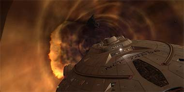
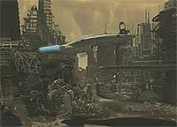
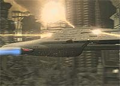
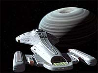
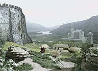
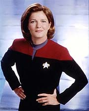
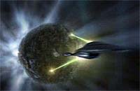

|
Janeway
vs. Primeira Diretriz, Parte V
 Em
seu sexto ano de jornadas pelo quadrante Delta e a cerca de 30 mil
anos-luz de casa, a capitã Kathryn Janeway violou a Primeira
Diretriz --protocolo de não-interferência em culturas alienígenas--
poucas vezes. Isso, no entanto, não está atribuído a algum tipo
de sentimento de redenção, mas à falta de oportunidades
significativas que encurtassem a viagem para a Terra. Em
seu sexto ano de jornadas pelo quadrante Delta e a cerca de 30 mil
anos-luz de casa, a capitã Kathryn Janeway violou a Primeira
Diretriz --protocolo de não-interferência em culturas alienígenas--
poucas vezes. Isso, no entanto, não está atribuído a algum tipo
de sentimento de redenção, mas à falta de oportunidades
significativas que encurtassem a viagem para a Terra.
O cansaço e estresse são constantes companheiros da tripulação,
perdida há bastante tempo e totalmente desamparada. Para Janeway,
a missão da USS Voyager não se trata mais de um dever para com
os colegas e a Frota Estelar; significa algo além. As 143 pessoas
servindo a bordo da nave se tornaram uma família. Na data estelar
53167.9 ("Dragon's Teeth"), um novo meio de
atravessar grandes distâncias de forma instantânea foi
encontrado.

 Enquanto
navegava em dobra pelo espaço, a Voyager foi sugada para um
emaranhado de corredores subespaciais. Descobriu-se que a
anomalia, sob o controle de uma raça chamada Turei, ligava extensões
astronômicas da mesma forma que as conhecidas fendas (como aquela
situada nas proximidades da estação Deep Space Nine). Avessos à
presença da nave em seu território, os turei conduziram-na para
fora do fenômeno e, em seguida, abriram fogo após a capitã se
recusar a permitir que indivíduos viessem a bordo para apagar o
banco de dados.
 Buscando
refúgio, a Voyager aterrizou em um planeta que 900 anos antes
fora palco de uma guerra nuclear devastadora. Lá, a tripulação
reanimou os nativos sobreviventes, chamados Vaadwaur, que haviam
permanecido em estado de 'stasis' durante todo esse período. A
capitã até chegou a se preocupar com a questão da diretriz, mas
isso mudou rapidamente, quando os alienígenas prometeram revelar
mapas dos corredores subespaciais em troca de ajuda para
reconstituir sua frota de naves.
As conseqüências do acordo culminaram em uma sangrenta guerra
entre Turei e Vaadwaur, que quase levou à destruição da nave da
Federação. No fim das contas, a interferência na cultura
adormecida não rendeu virtualmente nada à tripulação, dado que
o caminho pelos corredores subespaciais impregnou-se de naves
hostis, afugentando-a. Esse evento em si seria motivo de uma corte
marcial geral, pois uma capitã da Frota foi responsável pela
deflagração de um conflito entre espécies, desestabilizando um
setor espacial fora de jurisdição da Federação.
 Porém,
a vida continua... Algumas semanas mais tarde ("Blink of
an Eye"), em sua sede por pesquisas científicas, Janeway
altera o curso da nave para investigar um planeta singular.
Habitado por um povo em fase medieval, o contato seria
terminantemente proibido... na teoria, é claro. Ao entrar em órbita
do estranho astro, a Voyager acaba por alterar suas propriedades físicas
e, à medida que os segundos passam na nave, correm-se anos ou séculos
naquele mundo.
 Um
confronto torna-se inevitável, pois a presença da Voyager na
atmosfera causa severos abalos sísmicos na superfície,
despertando a ira da população. Entrando em contato com um
habitante, a capitã tenta se explicar, mas não demora muito até
os nativos desenvolverem a tecnologia de torpedos quânticos,
disparando contra a nave. Algum tempo mais tarde, criam
dispositivos de raio trator, removendo-a finalmente da órbita.
 A
grande questão nesse episódio é a introdução da USS Voyager
na cultura local. Desde os primórdios de sua civilização, os
habitantes olhavam para o céu e viam uma estrela de brilho
intenso que, de tempos em tempos, chacoalhava o solo. Ao longo dos
séculos, atribuíram valores divinos ao visitante, moldando toda
uma cultura em torno da nova "divindade". Será que os
almirantes da Frota ficariam contentes com isso?
Na parte final do artigo "Janeway vs. Primeira
Diretriz", conheça a única ocasião em que uma violação
da Primeira Diretriz seria endorsada pela Federação: o duelo
entre a capitã da Voyager e o maior vilão da história de
Jornada nas Estrelas... Será que Kathryn abandonaria de vez o
protocolo primordial da Frota na tentativa de trazer sua tripulação
para casa?

Daniel
Sasaki é co-editor do Trek
Brasilis
|